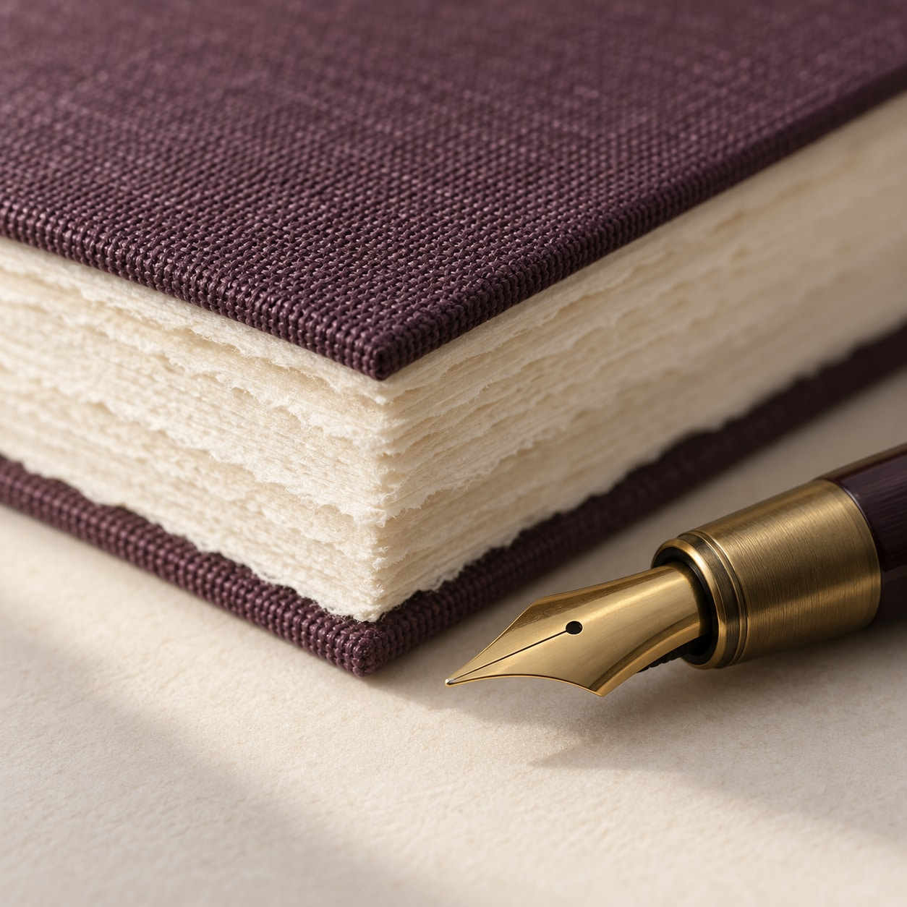
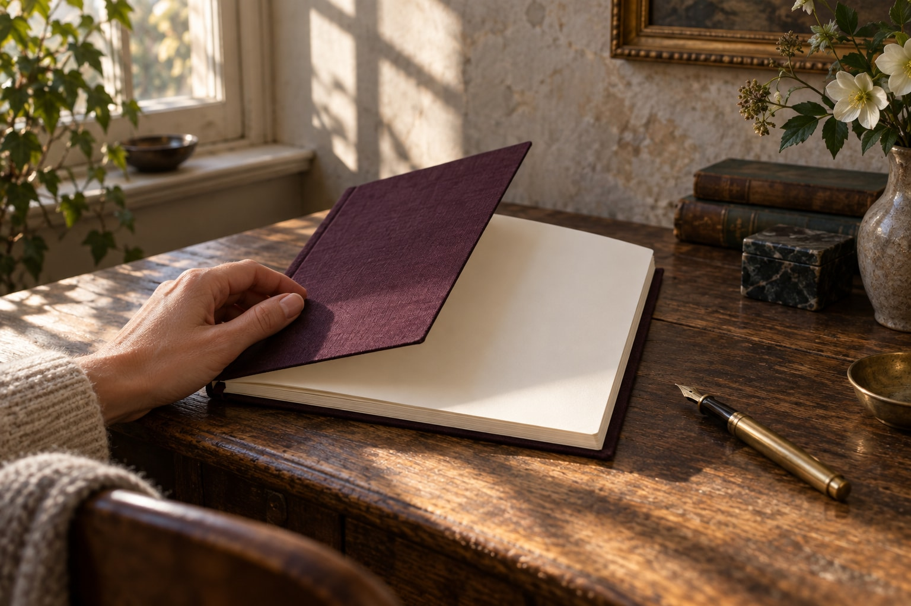

FOLIONOTES FOR A SLOWER DAY
Ruimte voor
wat nog moet
ontstaan.
EEN BLANKE PAGINA. JOUW BEGIN.
Grote plannen. Kleine observaties. Gedachten die je even wilt bewaren. Maak er ruimte voor.
Ontdek het notitieboek ↗
VAN DICHTBIJ
Een verhaal in de details.
Van de textuur van het linnen tot de eerste lege pagina.
